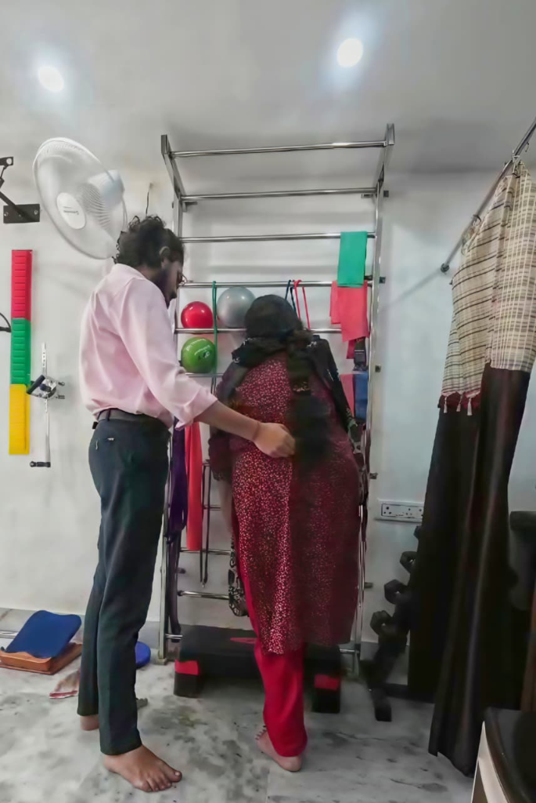
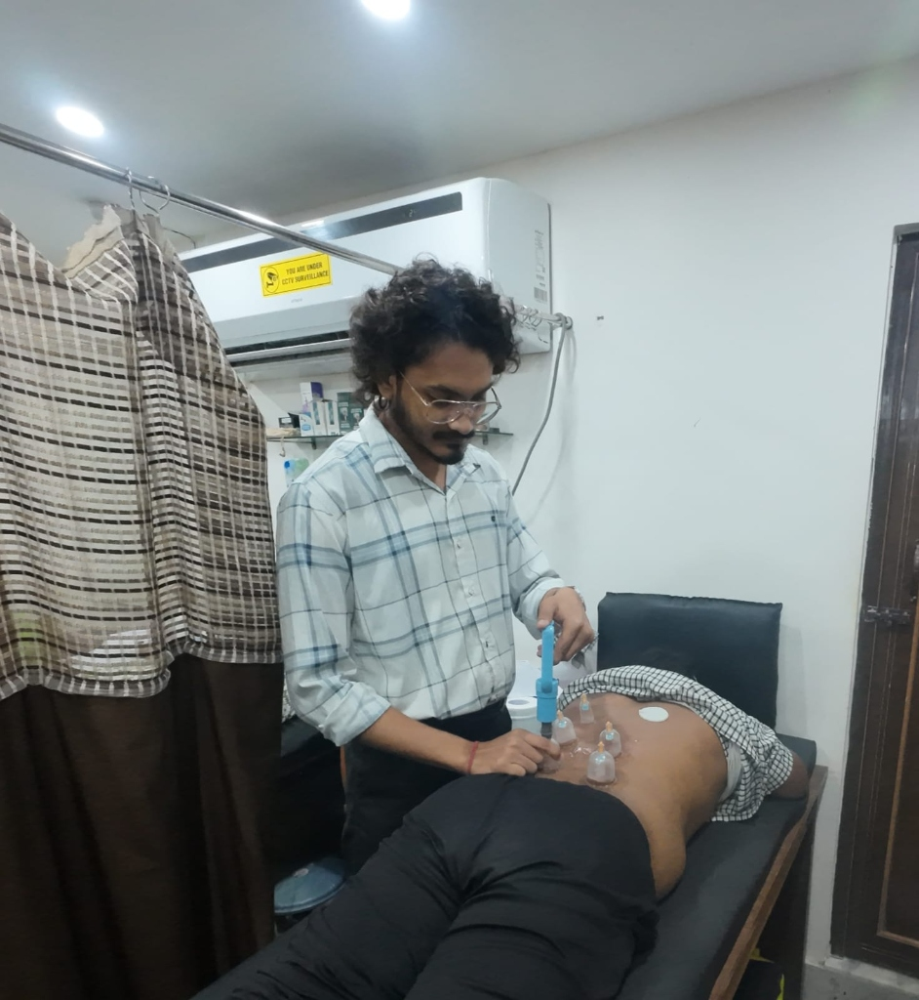
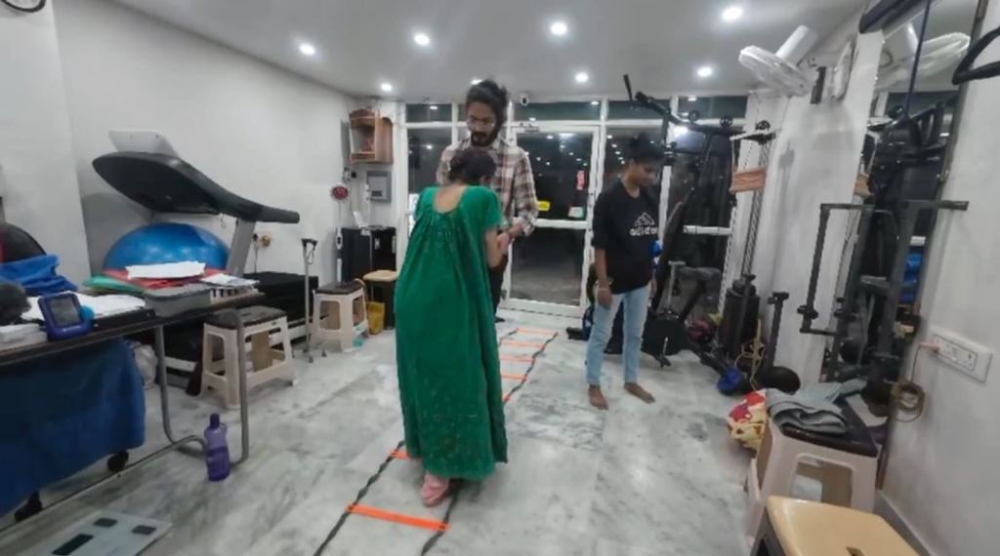
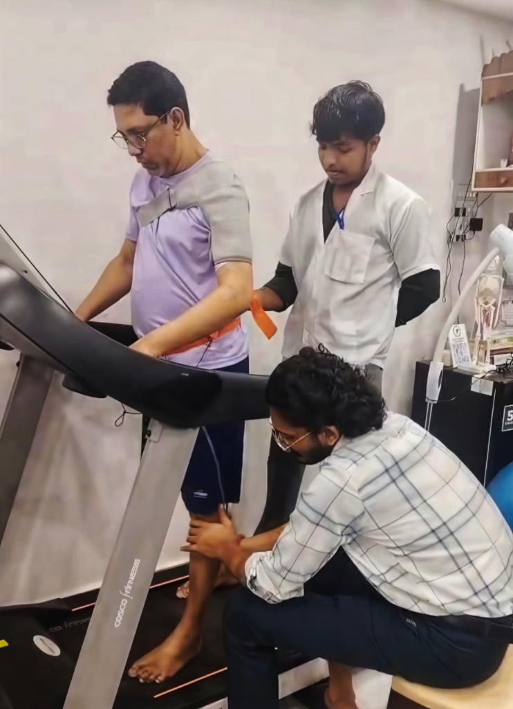
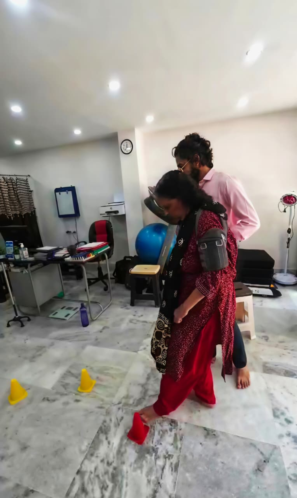
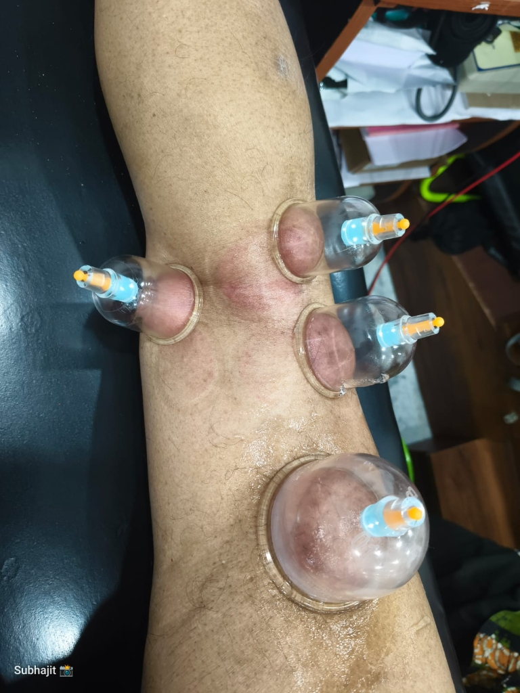

Physiotherapy Defined
Physiotherapy is a healthcare profession focused on restoring, maintaining, and maximizing physical strength and functional mobility. We take an individualized approach, diagnosing movement biomechanics and targeting spinal alignment to resolve root causes rather than temporary symptoms.

Treatment Techniques & Manual Therapy
Our practice utilizes advanced manual therapy combined with evidence-based techniques. This includes myofascial decompression (cupping therapy), joint mobilization, and deep tissue release to relieve muscle spasm and accelerate natural healing.

Sports Injury Recovery & Agility
Whether you are an athlete or recovering from a sprain, we specialize in functional rehabilitation. Using coordination ladders and dynamic movement drills, we restore neuromuscular control, agility, and prevent recurring injuries.

Post-Surgical & Gait Rehabilitation
Recovery is critical following surgery. We provide medically supervised post-operative rehabilitation for knee replacements, ligament reconstructions, and spinal surgeries, utilizing treadmill gait training and joint support.

Neurorehab, Balance & Senior Care
From neurological movement disorders to maintaining balance and fall-prevention in seniors, we offer gentle, structured training. We focus on enhancing confidence, independent mobility, and quality of life for every age group.

Evidence-Based Care & Targeted Therapy
Our approach integrates proven clinical research with targeted treatment modalities. From localized joint decompression cupping to therapeutic exercises, every treatment plan is tailored for long-term health and peak function.

Visit Our Clinic
Providing a professional space for your recovery journey.
Service Details
- Consultation: Online & Offline Available
- Session Length: 45 - 60 Minutes
- Home Visits: Available on request
Opening Hours
- Mon - Sat: 10:00 AM - 12:00 PM
- Evening: 5:00 PM - 9:00 PM
- Sunday: On emergency call
Get In Touch
- Phone: +91 76794 42194 / +91 70038 88046
- Email: subhajitmukherjee.physio@gmail.com
- Address: Ariadaha, Baranagar, Kolkata

Professional Background
Dr. Subhajit Mukherjee, PT
Committed to life-long learning and patient-centric care.
Education & Credentials
- Degree: Bachelor of Physiotherapy (BPT)
- Specialization: Musculoskeletal & Sports Rehabilitation
- Experience: Clinical Therapy & Neurorehab
Expertise & Skills
Clinical Philosophy
I believe in a hybrid approach to healthcare, combining clinical precision with modern evidence-based techniques to optimize patient recovery and performance.